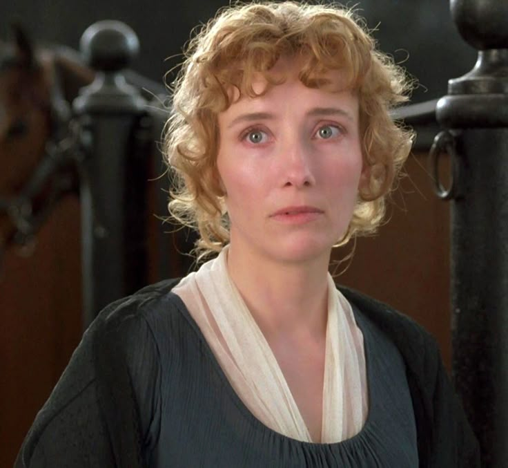
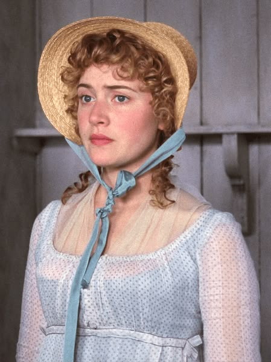
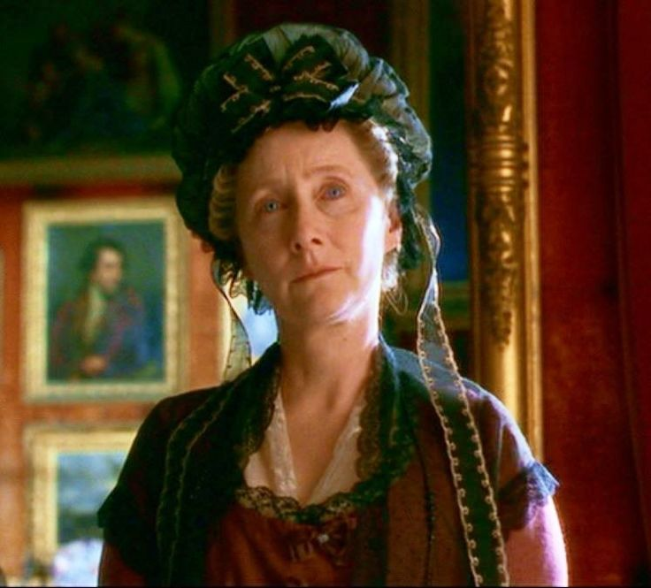
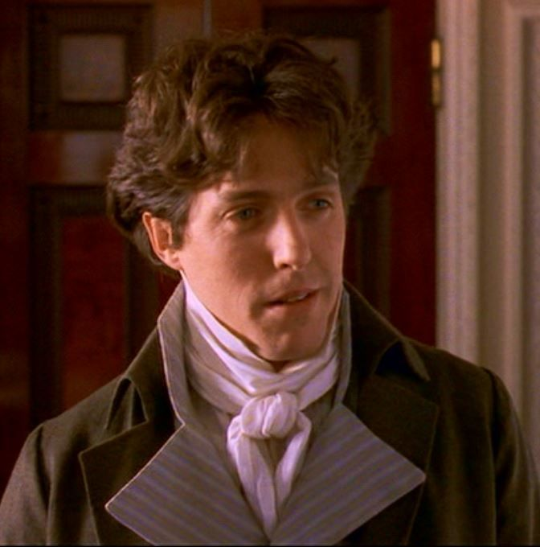
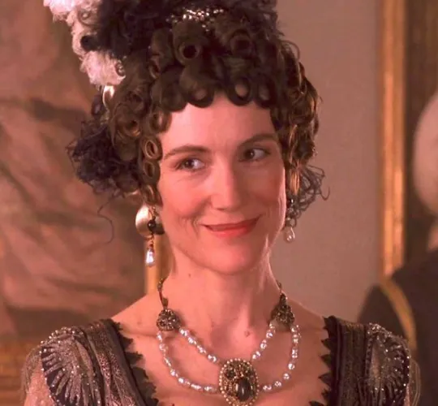
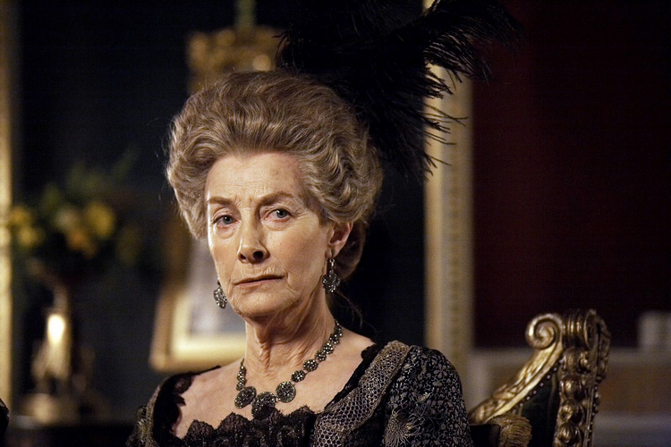
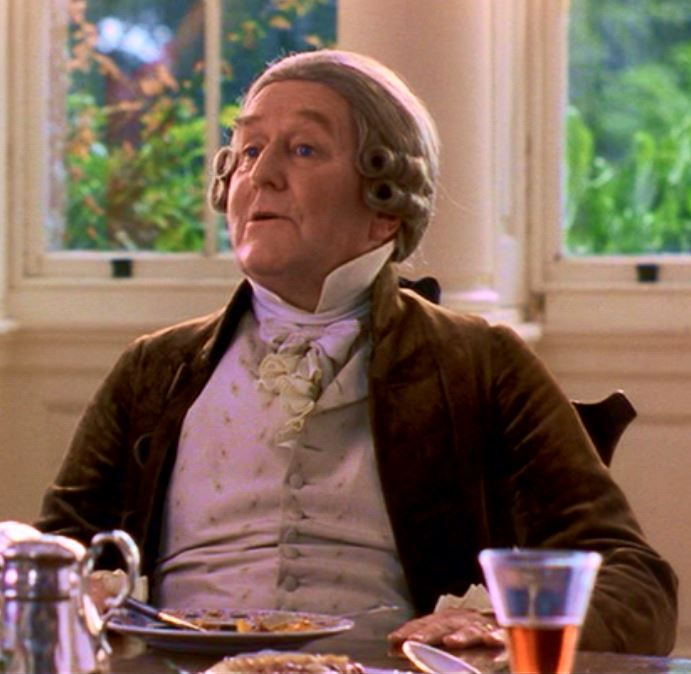

Who was mentioned in this chapter? |
|
|---|---|
|  |
Elinor DashwoodThe 19-year-old eldest daughter of Mr. and Mrs. Henry Dashwood and the heroine of Austen's novel. Elinor is composed but affectionate. |
|  | Marianne DashwoodThe 17-year-old second daughter of Mr. and Mrs. Henry Dashwood. Marianne is spontaneous and is a romantic idealist. |
|  | Mrs. DashwoodThe kind and loving mother of Elinor, Marianne, and Margaret and second wife to Henry Dashwood. She has inherited no fortune of her own but wants the best for her daughters and shares Marianne's romantic sensibilities. |
|  | Edward FerrarsThe sensible and friendly older brother of Fanny Dashwood and Robert Ferrars. He has been engaged to Lucy Steele for four years, and has yet to marry her. |
|  | Fanny DashwoodThe selfish, snobbish, and manipulative wife of John Dashwood and the sister of Edward and Robert Ferrars. |
|  | Mrs. FerrarsThe wealthy, manipulative mother of Edward and Robert. |
|  | Sir John MiddletonThe jovial but vulgar distant relation of the Dashwoods who invites Mrs. Dashwood and her three daughters to stay at Barton Cottage after Mr. and Mrs. John Dashwood inherit Norland, leaving the women homeless. |